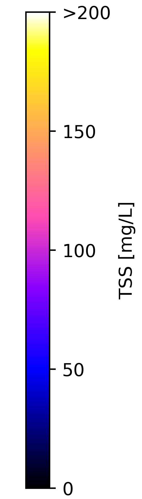

The historical flood analysis tool was build upon the Joint Research Centre (JRC) Global Surface Water dataset. The JRC dataset contains maps of the location and temporal distribution of surface water from 1984 to 2015 and provides statistics on the extent and change of those water surfaces. These data were generated using 3,066,102 scenes from Landsat 5, 7 and 8 acquired between 16 March 1984 and 10 October 2015. Each pixel was individually classified into water / non-water using an expert system and the results were collated into a monthly history for the entire time period The Monthly History collection holds the entire history of water detection on a month-by-month basis. The collection contains 380 images, one for each month between March 1984 and October 2015. For more information see the associated journal article: High-resolution mapping of global surface water and its long-term changes (Nature, 2016) and the online Data Users Guide.
The historical flood analysis tool presents the occurance of surface water for the selected period. A 100% water occurance means that all datapoints in the collection are identified of water (permanent water), 50% implies a location that is inundated half of the time. Locations with a low surface water occurance have only been inundated for a short period in the whole period, likely caused by flood events.
It is important to note that not all historical floods are recorded in the dataseries. Floods might have occured between two overpasses of the satellites or observations might have been compromised by atmospheric conditions.
The tool helps to identify areas prone to flooding using the complete Landsat archive. Areas which have been flooded in the past are also prone to floods in the future.


|  | opacity | |||||
|---|---|---|---|---|---|---|
Select a time period |
Functions to display time series/download the map |
Upload KML file |
| Download the data |